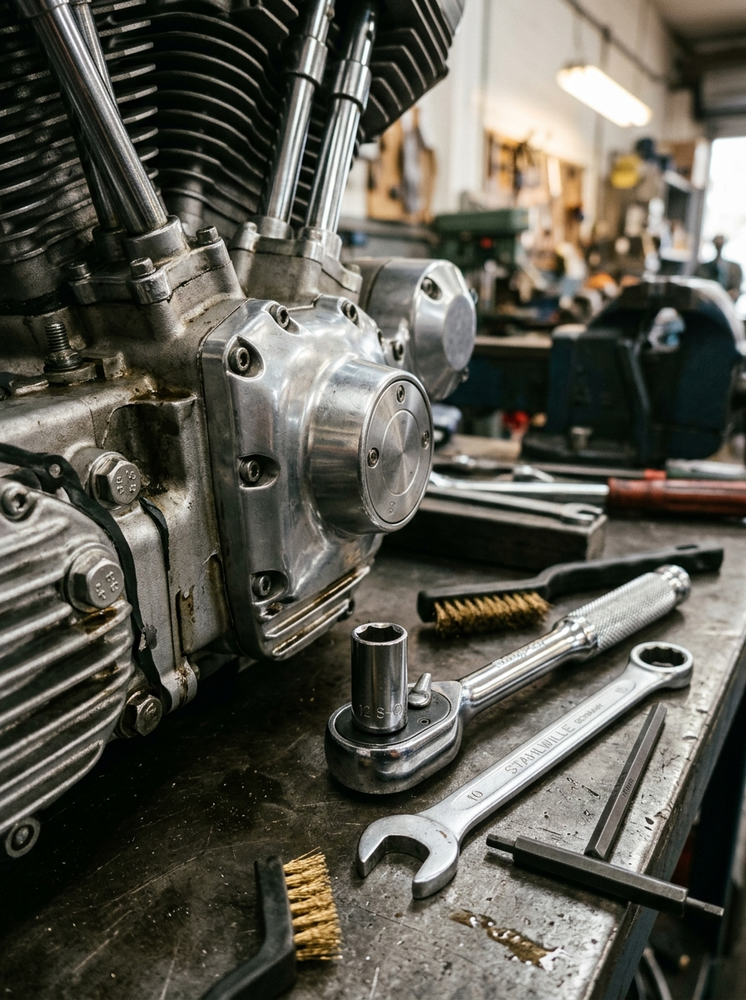
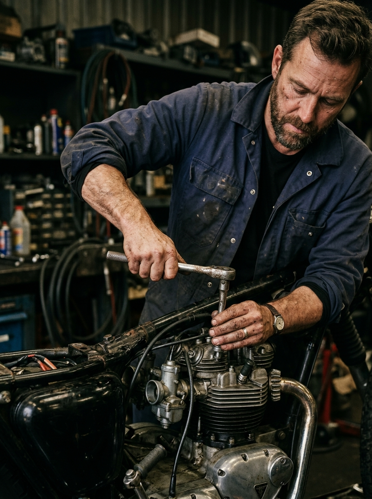

En Jota Motor no cambiamos piezas por cambiar. Buscamos el origen del problema y te damos un presupuesto cerrado antes de apretar un solo tornillo.

Aquí no hay recepcionistas en traje que no saben distinguir un carburador de un inyector. Si traes tu moto, hablas con Jose, el mecánico jefe. Te explicará exactamente qué le pasa a tu máquina.
Pedir cita© 2026 Jota Motor. Baena, Córdoba.